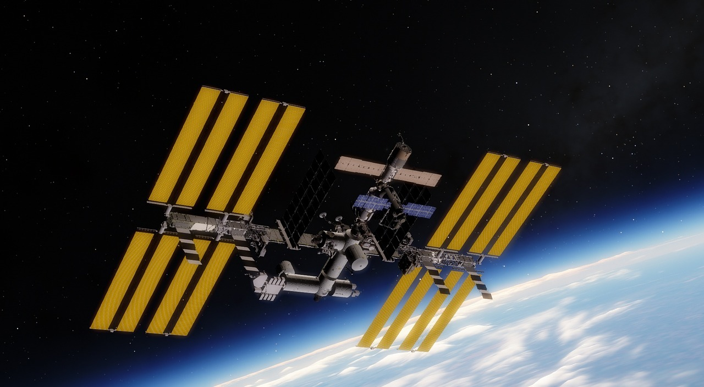

ما هي محطة الفضاء الدولية؟
تعرف محطة الفضاء الدولية اختصاراً بـ (ISS) هي محطة فضاء دولية تم بنائها سنة 1998 بموجب تعاون دولي بقيادة الولايات المتحدة وروسيا وتمويل من كندا واليابان و 10 دول أوروبية.
تدور المحطة على ارتفاع 390 كيلومترا عن سطح كوكب الأرض، وأطلقت لتأخذ محل ومهام المحطة الفضائية الروسية مير (Mir)، هدفها تحضير الإنسان لتمضية أوقات طويلة في الفضاء، وإجراء التجارب خارج منطقة الجاذبية الأرضي
من يملك محطة الفضاء الدولية؟
محطه الفضاء الدوليه (ISS)
مشروع تقوم ببنائه خمس وكالات فضائيه هي
وكاله الفضاء الأمريكية nasa
وكاله الفضاء الروسية RossKosmos
وكاله الفضاء اليابانية JAXA
وكاله الفضاء الأوروبية ESA
وكاله الفضاء الكندية CSA
بالاضافه لوكاله الفضاء البرازيلية و هي تساهم في المشروع من خلال عقد مع وكاله nasa و وكاله الفضاء الإيطالية و هي تساهم في المشروع في إطار وكاله الفضاء الأوروبية و التى هي عضوه بها
شارك 16 بلداً في بناء محطة الفضاء الدولية: الولايات المتحدة الامريكية، روسيا، كندا، اليابان، بلجيكا، البرازيل، الدنمارك، فرنسا، ألمانيا، إيطاليا، هولندا، النرويج، اسبانيا، السويد، سويسرا و المملكةالمتحدة، وجدير بالذكر أنها حلت محل المحطة الروسية مير حيث أن روسيا كانت السباقة لإنشاء محطة فضائية .
متي بداية العمل على مشروع المحطه؟
بدا بناء المحطة في 20 نوفمبر 1998 بإطلاق قطاع الحمولات - الوظيفي زاريا وهي الوحدة الفضائية الأولى للمحطة الفضائية الدولية، وفيما بعد التحمت به الحجرة الانفصالية الأمريكية يونيتي (عام 1998) والحجرة الانفصالية الروسية زفيزدا (عام 2000)
ما هو تركيب المحطه؟
و المحطه عباره عن قمر صناعي أرضي مأهول كبير الحجم عملت عليه 15 دوله تشيديه في الفضاء و اشتغلت المحطه الفضائية العالمية على ثمانية أجزاء أسطوانية ضخمة تسمى المركبات الانفصالية و تم إطلاق كل منها على نحو منفصل من الأرض و يقوم رواد الفضاء والملاحون بتجميع الأجزاء في الفضاء
ما هو وقود المحطة و كيف تسير في الفضاء
لا تستخدم محطة الفضاء الوقود بالمعني الحرفي و انما تستخدم الخلايا الشمسية الضخمة على جانبيها لتوليد الطاقة الكهربائية اللازمة لتشغيلها، اما حركة دورانها فهي تدور حول الأرض و تدور بزاوية ميل 22.5 درجة لذلك فهي لا تمر من نفس المكان كل مرة تدور حول الأرض و تعتمد على حسابات معقدة لاستغلال الجاذبية مع وجود دافعات للحفاظ على المدار و السرعة (attitude control thrusters).
ستقوم ثمانية ألواح شمسية بتزويد المحطة بأكثر من 100كيلو وات من القدره الكهربائية و هي كميه من القدره الكهربائية تفوق بعدة مرات القدرة التي زودت بها أي محطة فضائية سابقة و سوف تركب الألواح على هيكل معدني طوله مائه و تسعه أمتار
كما سيحمل الهيكل أيضًا المشعات التي سوف تبث طاقة الحرارة المهدرة في الفضاء بالإضافة إلى مسار لذراع آلية متحركة
ماهو دور محطة الفضاء الدولية؟
هذه المحطة تعتبر مختبرا للأبحاث والتجارب في الفضاء، وتستخدم لاختبار أنظمة وعمليات استكشاف الفضاء في المستقبل، كما تعمل على تحسين نوعية الحياة على الأرض عن طريق زيادة المعرفة العلمية من خلال الأبحاث التي أجريت خارج الأرض.
حتى الآن، تم سفر 211 باحث إلى محطة الفضاء الدولية، ومن 2 نوفمبر 2000، عندما وضع الطاقم الأول قدمه على المحطة، ازدادت بشكل مستمر بنسبة 38 أطقم متتالية.
و المحطه عباره عن بناء اصطناعي مخصص للقيام بانشطة في المدار المنخفض حول الارض لاغراض مختلفة و له حيز داخلى كافي و مؤهل لاستضافه البشر و حفظ الحياه
تم تصميمه ليبقى في المدار الأرضي المنخفض لفتره طويله نسبيا و محطات الفضاء لديها القابلية للاندماج مع المركبات الفضائية القادمة من الأرض بشكل عام .
محطة الفضاء الدولية هي المحطة الوحيدة العاملة و الماهولة حاليا و كان هناك محطات سابقه مثل
محطة سالمون الروسية
و محطة الماز و سكاي لاب
و محطة مير التي سقطت و احترقت في الغلاف في 23 مارس 2001
و محطة الفضاء الصينية تيانقونغ و سقطت أيضا و تحطمت في 2 أبريل 2018
كم سرعة المحطة الدولية في الفضاء؟
تسير المحطة في الفضاء بسرعة 27,600 كيلومتر في الساعة اي حوالي 7.66 كيلومتر في الثانية الواحدة.
هذا يعني أن المحطة تدور حول الكوكب بأسره كل 90 دقيقة فقط. و يمكنها الذهاب للقمر و العودة في أقل من 24 ساعة!
و تدور محطة الفضاء الدولية حول الأرض في حوالي 93 دقيقة، لتكمل 15.5 دورة في اليوم.
أين تقع المحطة الدولية و ما هو ارتفاع دورانها؟
تدور المحطة في مدار على ارتفاع يتراوح بين 370 و 460 كيلو متر فوق سطح الأرض وتدور المحطة حول الأرض في مدار غير متماثل.
وتحافظ محطة الفضاء الدولية على مدار متوسط ارتفاعه 400 كيلومتر (250 ميل) عن طريق ما يسمى بمناورات الإرتفاع تستخدم فيها المحطة المحركات المثبتة على وحدة الخدمة (زفيزدا).
ظهور محطة الفضاء الدولية من الارض
هل تعلم أن المحطة الدولية حاليا هي ثالث ألمع الأجرام بعد القمر والزهرة، بعد أن رصدها مراقبوا النجوم صرحوا أنها تبدو كبقعة مضيئة، أو تبدو إن تم رصدها عن قرب أكثر وكأنها طائرة تتحرك بسرعة، لهذا يصعب لأي شخص رصد المحطة الفضائية الدولية بالعين المجردة لكونها مشابهة للكواكب المضيئة، لذلك خصصت NASA صفحة على موقعها تدعى ( Spot The Station ) يمكنك من معرفة متى وأين سوف تمر في المكان الذي تتواجد فيه
نهاية محطة الفضاء الدولية
تم انشاء برنامج تمويل المحطة الدولية في عام 1998 على أمل ان تعمل لمدة حوالي 15 عاماً و لكن تم تمديد مدة العمل بها بدعم مالي اضافي من الدولي الداعمة و على رأسهم الولايات المتحدة عن طريق ناسا و من المفترض ان يستمر الدعم حتى حوالي 2024 فقط و ذلك لان ناسا سوف تنقل تركيزها الى دعم المهمات المأهولة للقمر و المريخ خلال العقود القادمة .
عندما نصل إلى نهاية حياة هذه المحطة المحتمل سيتم استخدام بعض الوحدات الروسية الحديثة ك nauka ، سيتم استخدامها لإنشاء محطة فضائية ثالثة لدعم مهمة السفر إلى الكواكب كالمريخ والقمر وزحل ، حيث ستكون محطة الانطلاق و العودة.
يعكف العلماء حالياً على دراسة السيناريوهات المتاحة عند وضع نهاية لعمل محطة الفضاء الدولية خلال السنوات القادمة حيث ان يتوقع ان تزدحم المدرات أكثر خلال السنوات القادمة بوجود ما يزيد عن 5000 قمر صناعي يعمل و الاف اخرى توقفت عن العمل، و من الاقتراحات كان تفكيك المحطة أو نقلها لمدار أعلى 600 كم من الأرض (مع وجود مخاطر الاصطدام بالنفايات الفضائية) و يمكن لهذا الخيار تمديد عمل المحطة حوالي 100 عاماً اضافياً.
© Copyright 2022 Space Youth Forum